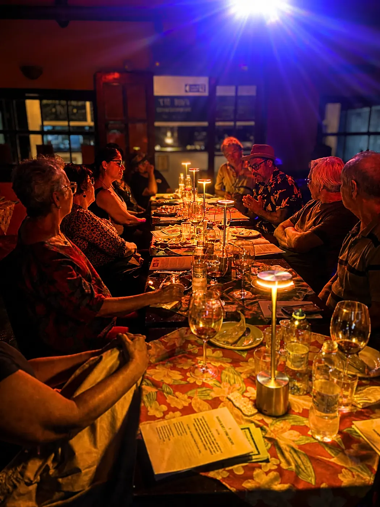

Paulistânia Desvairada
Comida, cultura, arte e conversa
O Tio Dinho também abriga a Paulistânia Desvairada, projeto cultural-gastronômico criado por Thiago Basile.
A mesa como linguagem viva
A Paulistânia desenvolve experiências que aproximam gastronomia, literatura, cinema, teatro e outras áreas da cultura, sempre com a comida no centro da experiência.
